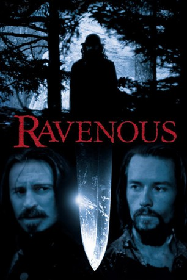
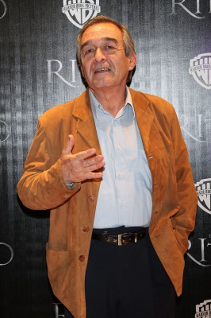

#5238 Ravenous - Friß oder stirb
 
 IMDB-Wertung: 7.1 / 10
IMDB-Wertung: 7.1 / 10  Metascore: 0
Metascore: 0 
Der Film beschäftigt sich mit Kannibalismus im Kalifornien der 1840er und weist dabei gewisse Parallelen zu den Ereignissen rund um die Donner Party auf. Dabei geht der Film die Thematik ungewöhnlicherweise mit Ironie und viel schwarzem Humor an.
Jahr: 1999
Dauer: 101 Minuten
FSK: 18
Land: Tschechische Republik Studio: 20th Century Fox of GermanyTonspuren: DTS - ,
Untertitel: Deutsch,
Auflösung: 720p (1280x544) Größe: 4218 MB
Genre: Thriller, Horror, Fantasy
Regisseur: Antonia Bird
Drehbuch: Jorge Guerricaechevarría
Soundtrack:
Darsteller:
 Guy Pearce als Capt. John Boyd
Guy Pearce als Capt. John Boyd Robert Carlyle als Col. Ives / F.W. Colqhoun
Robert Carlyle als Col. Ives / F.W. Colqhoun David Arquette als Pvt. Cleaves
David Arquette als Pvt. Cleaves Jeremy Davies als Pvt. Toffler
Jeremy Davies als Pvt. Toffler Jeffrey Jones als Col. Hart
Jeffrey Jones als Col. Hart John Spencer als Gen. Slauson
John Spencer als Gen. Slauson- Stephen Spinella als Knox
 Neal McDonough als Pvt. Reich
Neal McDonough als Pvt. Reich- Joseph Runningfox als George
- Bill Brochtrup als Lindus
-  Fernando Becerril als Mexican Commander
- Damián Delgado als Mexican Sentry
- David Heyman als Mr. Janus
- Tim Van Rellim als Mr. MacCready
- Sheila Tousey als Martha
- Gabriel Berthier als Mexican Commander
- Pedro Altamirano als Mexican Commander
- Joseph Boyle als U.S. Blonde Soldier
- Fernando Manzano als Mexican Sentry
- Alfredo Escobar als Soldier
- Gerardo Martínez als Soldier
- Miezi Sungu als Jones
Datei: X:\FSK18-1900-1999\Ravenous - Friß oder stirb (1999, FSK18, 1280x544).mkv seit 03.01.2017
Festplatte: FSK18
 Es gibt insgesamt 108 Filme in der Gruppe 'FSK18-1900-1999'
Es gibt insgesamt 108 Filme in der Gruppe 'FSK18-1900-1999'